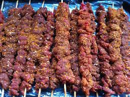

Suya

Description
Suya or tsire is traditional smoked spiced meat skewer which originates from Northern Nigeria, Hausa Land and is a popular food item across West Africa. Suya is a big part of Hausa culture and food and is historically prepared and made by Hausa men
'Mai nama'.
Ingredients
- Peanuts
- Cayenne Pepper
- Smoked Paprika
- Garlic powder
- White pepper and salt
- Chicken boullion/Maggi
- Hot ground pepper
- Sirloin steak
- Meat skewers
Steps
- Soak the meat skewers in water for at least 20 minutes to prevent burning
- Preheat the oven to 450 F. Lightly oil the baking sheet.
- Peel roasted peanuts, and then grind them in a coffee grinder with skin on, until finely crushed, being careful not to grind them into a paste
- Mix garlic powder, onion powder, smoked paprika, white pepper, cayenne pepper, hot ground pepper, and bouillon (or Maggi) in a medium bowl. Add the ground peanuts to the spice mixture. Set it aside.
- Pat the suya steaks dry with a paper towel. You want to have a completely dry steak before cooking. Slice the steak diagonally in medium-thin strips
- Add about 2 tablespoons of oil into the sliced beef, followed by 2-3 tablespoons or half of the suya spice mixture (set aside the rest of the spice rub). Mix everything until fully combined.
- Cover the bowl with a plastic cling wrap and marinate for an hour
- When ready to cook, thread the beef strips onto the skewers, about four per skewer, making sure the slices of meat cover the skewers.
- Rub the skewered steak strips on both sides with the rest of the spice mixture. Then line a roasting or baking sheet with foil and place the skewers on top.
- Drizzle with oil and bake them for about 12-15 minutes.
- For the last 3 minutes of baking, switch the setting from bake to broil to get a nice crisp brown on the outside.
- Serve fresh from the oven or grill with onions and tomatoes.
Optional: You may also grill your suya beef. Brush the grill rack with oil and place the skewered meat on the rack. Brush them with oil and grill for a few minutes or until lightly charred, then turn and grill on the other side –
about 3-5 minutes for each side, depending on the thickness of the meat slices.
Back to Recipe list